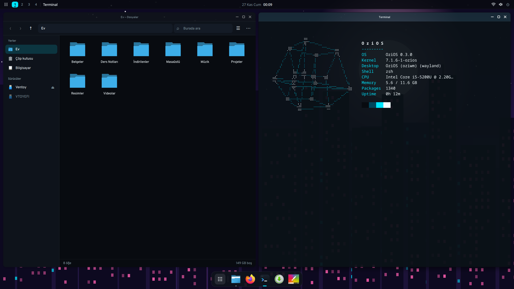
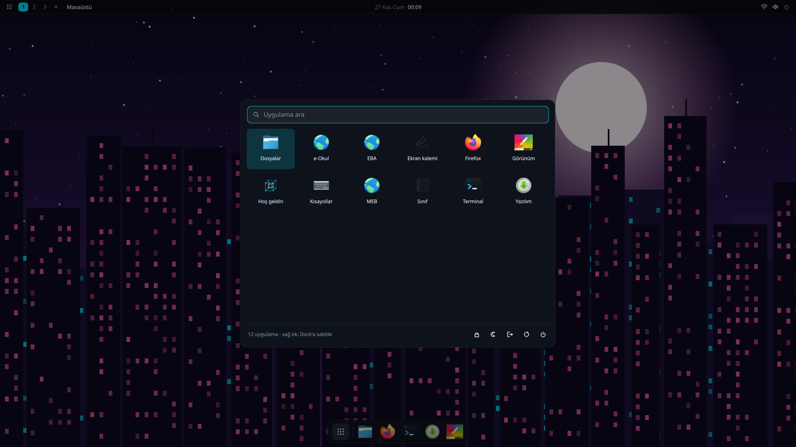
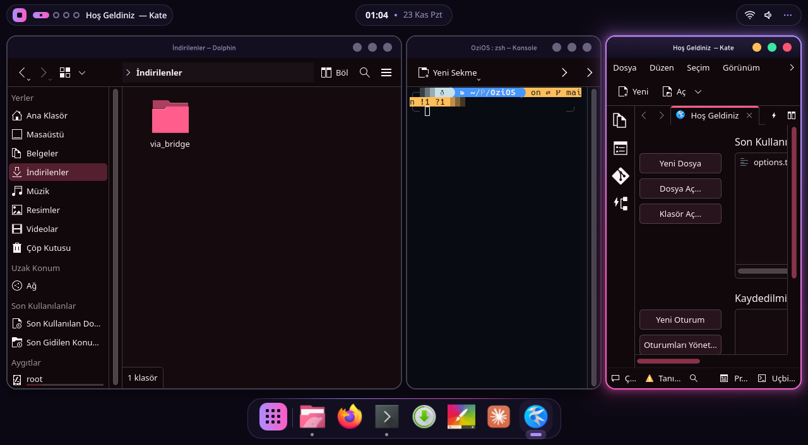
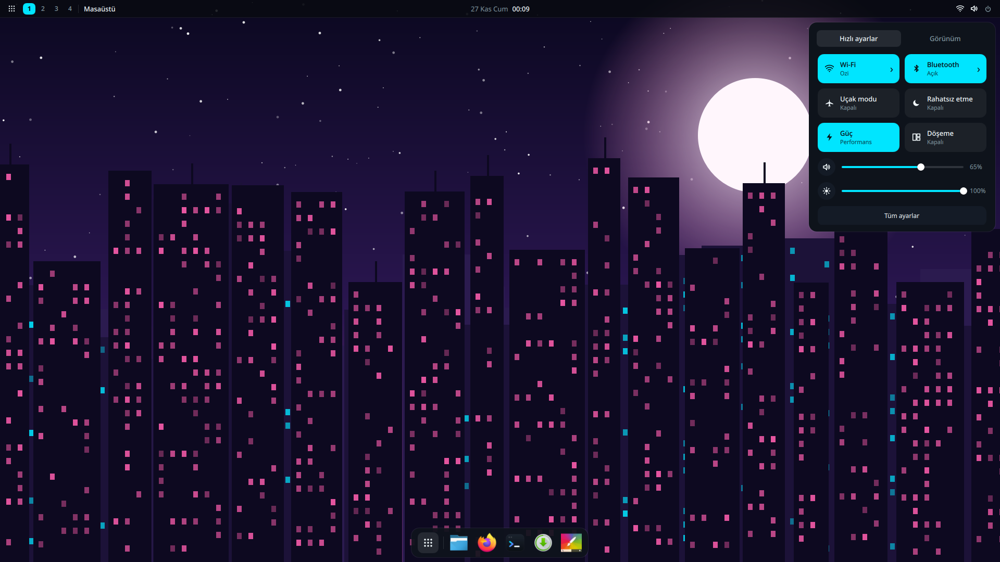
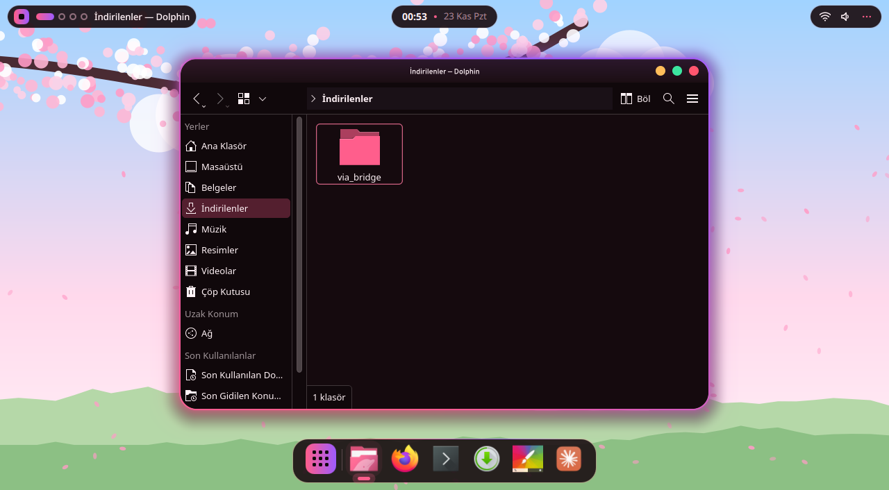
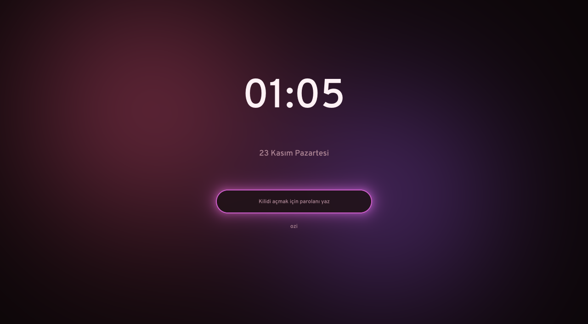

Hyprland kadar güzel,
Plasma kadar kolay bir Linux.
OziOS, CachyOS'un hızlı temeli üstüne sıfırdan yazılmış kendi masaüstüyle gelir: ışıltılı pencereler, altı tema, döşeme, kilit ekranı, hızlı ayarlar. Terminal bilmeden kullanılır, tek komutla güncellenir.

Her şey sıfırdan, her şey OziOS'un
Masaüstü başka bir masaüstünün üstüne giydirilmiş bir tema değil. Pencere yöneticisi oziwm Rust ile, kabuk ozi-shell Qt ile yazıldı; ikisi de OziOS için.
Işıltılı pencereler
Yuvarlak köşeler, gölge, odaktaki pencerenin çevresinde temanın iki renginde akan ışıltı. Hepsi ekran kartında çizilir.
Altı tema, canlı ayar
Camgöbeği, Kutup Işığı, Kor, Nane, Gül, Ayaz. Işıltı, köşe ve hareket kaydırıcıları oynarken bütün pencereler o an değişir.
Döşeme ve çalışma alanları
Super+T ile pencereler kendini düzenler, Super+1…4 ile dört masaüstü. Pencereler yerlerine akarak geçer.
Hızlı ayarlar
Wi-Fi ve ağlar, Bluetooth cihazları, uçak modu, parlaklık, ses, güç profili. Klavyedeki tuşlar ekranda gösterilir.
Kilit ekranı ve bildirimler
Kilit ekranı pencere yöneticisinin içinde çizilir; hiçbir uygulama onu atlatamaz. Bildirimler, rahatsız etme kipi.
Kendi kendine güncellenir
Düzeltmeler GitHub'daki OziOS deposundan gelir: sudo pacman -Syu ve bitti.
Galeri
Bütün görüntüler OziOS'un kendisinden; düzenleme yok.





İndir ve kur
USB belleğe yaz (Ventoy ya da balenaEtcher), bilgisayarı ondan aç, "Kur"a bas.
OziOS ISO
Masaüstü, uygulama mağazası ve OziOS çekirdeği hazır gelir. 0.4 ISO'su hazırlanıyor; sürüm notları ve paketler şimdiden sürüm sayfasında.
Arch / CachyOS'a yalnız masaüstü
Sistemin kalır, giriş ekranına "OziOS" oturumu eklenir.
yay -S ozi-desktop
Güncellemeler
OziOS sistemleri bu depoyu kullanır; her yeni düzeltme tek komutla gelir.
[ozios] SigLevel = Optional TrustAll Server = https://github.com/OziiDev/OziOS/releases/download/repo